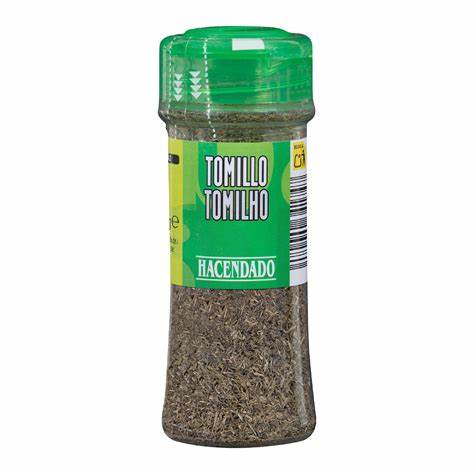

- Aceite

- Tomillo

Necesitas volver a la página anterior? ¡¡Aquí tienes una via de escape!!
Lo primero de todo es tener preparado todo lo necesario para llevar a cabo la receta. Los ingredientes pueden varias según los gustos de quien la vaya a llevar a cabo, pero la base es siempre la misma.
Necesitaremos:
Una vez tengamos todo listo podemos empezar a cocinal el menú.
Primeramente, ya que tenemos todo sobre la mesa necesitamos pones a hervir el agua en un cazo o en una olla. Dependiendo de la intensidad del fuego esto puede tardar más o menos, por lo que necesitamos ser pacientes.
De mientras podemos ir haciendo la carne y los champiñones. Para ello cogemos la cantidad de carne que vayamos a utilizar y lo cortamos en trozos. Esto hacerlo preferiblemente sobre una tabla preparada para cortar. A su vez dejamos listo el paquete de champiñones.
Es importante embadurnar la sarten con aceite para no estropear la sarten y para que la carne no se quede pegada a la base. Además vendrá bien añadirle un poco de aceite para hacerlo más saluble. Una vez tengamos la carne troceada la vertimos en la sarten una vez se haya calentado un poco junto con los champiñones y le añadimos tomillo para darle más sabor.
Llegados a este punto, el agua puede estar hirviendo, por lo que hechamos el arroz y lo remenamos un poco para que se esparza. Suele tardar entre 15 y 20 minutos, pero el tiempo bien bien especificado en el paquete de arroz.
Terminamos de hacer la carne y los champiñones dandoles vueltas para que terminen de hacerse y apagamos el fuego para que termine de hacerse.
Con esto deberiamos tener el pollo y los champiñones listos.
Solo quedaría esperar a que el arroz este listo. Necesitaremos un escurridor para poder vertir el arroz con el agua y que nos quede así solo el arroz. Este sería el paso final del platillo, pues solo quedaria juntarlo todo y barajarlo
¡¡Felicidades!! Si has seguido los pasos correctamente deberías tener un planto similar al que te presentamos a continuación. Esperamos que hayas disfrutado realizando este menú saludable y recordar que puedes utilizar otros ingredientes de tu preferencia.
¡¡Volvamos al principio!!